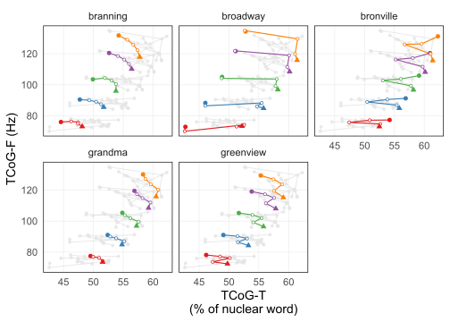
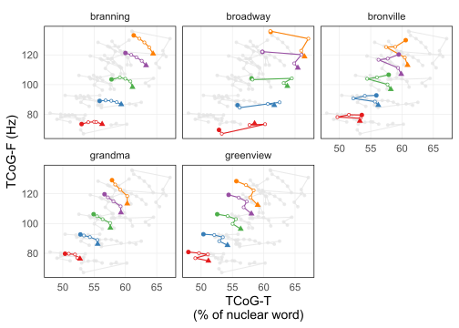

library(tidyverse)
library(targets)
library(sosprosody)
library(rPraat)
source("Helpers/tcog_helpers.R")
source('Helpers/bezier_helpers.R')
sf <- first(params$sf)
remaining_sf <- params$sf[-1]
exp_tag <- params$exptag
tcog_ver <- 'raw'
dep <- tar_read(assemble_resyntheses)
syl_specs <- tar_read(syllable_specification)
three_syl_words <- tar_read(three_syl_words)TCoG Analysis
# Input paths for prepped pitch tiers and textgrids
pt_path <- paste0("CalculatedFiles/", exp_tag, "_prepped_pt_", sf, ".RDS")
tg_dir <- paste0(params$nucpath, sf, "/TextGrids")# Output path for calculated tcog measurements
unweighted_tcogdf_path <- glue::glue("CalculatedFiles/tcog/{exp_tag}_unweighted_{sf}_tcog.rds")
weighted_tcogdf_path <- glue::glue("CalculatedFiles/tcog/{exp_tag}_weighted_{sf}_tcog.rds")
nucleus_times <- get_nucleus_times(tg_dir, syl_specs)[1] "grandma_01_HLL_008_1_1.TextGrid"
[1] "branning_01_HLL_002_1_1.TextGrid"
[1] "bronville_01_HLL_002_1_1.TextGrid"
[1] "greenview_01_HLL_006_1_1.TextGrid"
[1] "broadway_01_HLL_003_1_1.TextGrid"
[1] "grandmother_01_HLL_002_1_1.TextGrid"
[1] "maryland_02_HLL_004_1_1.TextGrid"
[1] "weatherman_02_HLL_002_1_1.TextGrid"
[1] "evansville_01_HLL_007_1_1.TextGrid"
[1] "middleman_01_HLL_001_1_1.TextGrid"
[1] "governor_01_HLL_001_1_1.TextGrid"
[1] "manager_01_HLL_001_1_1.TextGrid"
[1] "northerner_02_HLL_002_1_1.TextGrid"
[1] "weaverville_02_HLL_003_1_1.TextGrid"unweighted_tcog <- tcog_from_prepped_regions(pt_path)
weighted_tcog <- weighted_tcog_from_prepped_regions(pt_path,
nucleus_times,
.override_sd = .25)
saveRDS(unweighted_tcog, unweighted_tcogdf_path)
saveRDS(weighted_tcog, weighted_tcogdf_path)# Output path for figures
unweighted_figpath <- glue::glue("Figures/tcog/{exp_tag}_unweighted_{sf}_{tcog_ver}.pdf")
weighted_figpath <- glue::glue("Figures/tcog/{exp_tag}_weighted_{sf}_{tcog_ver}.pdf")
unweighted_plot <-
unweighted_tcog |>
dplyr::filter(!utterance %in% three_syl_words) |>
plot_recording_tcog(three_syl_words,
.which_tcog = tcog_ver)Warning: The `size` argument of `element_line()` is deprecated as of ggplot2 3.4.0.
ℹ Please use the `linewidth` argument instead.weighted_plot <-
weighted_tcog |>
dplyr::filter(!utterance %in% three_syl_words) |>
plot_recording_tcog(three_syl_words,
.which_tcog = tcog_ver)
ggsave(unweighted_figpath, unweighted_plot, device = 'pdf',
height = 5, width = 6)
ggsave(weighted_figpath, weighted_plot, device = 'pdf',
height = 5, width = 6)unweighted_plot
weighted_plot
for (sf in params$sf) {
# Input paths for prepped pitch tiers and textgrids
pt_path <- paste0("CalculatedFiles/", exp_tag, "_prepped_pt_", sf, ".RDS")
tg_dir <- paste0(params$nucpath, sf, "/TextGrids")
# Output path for calculated tcog measurements
unweighted_tcogdf_path <- glue::glue("CalculatedFiles/tcog/{exp_tag}_unweighted_{sf}_tcog.rds")
weighted_tcogdf_path <- glue::glue("CalculatedFiles/tcog/{exp_tag}_weighted_{sf}_tcog.rds")
nucleus_times <- get_nucleus_times(tg_dir, syl_specs)
unweighted_tcog <- tcog_from_prepped_regions(pt_path)
weighted_tcog <- weighted_tcog_from_prepped_regions(pt_path,
nucleus_times,
.override_sd = .25)
saveRDS(unweighted_tcog, unweighted_tcogdf_path)
saveRDS(weighted_tcog, weighted_tcogdf_path)
for (tcog_ver in c("raw", "centered", "semitone")) {
print(glue::glue("{tcog_ver} with sf={sf}"))
# Output path for figures
unweighted_figpath <- glue::glue("Figures/tcog/{exp_tag}_unweighted_{sf}_{tcog_ver}.pdf")
weighted_figpath <- glue::glue("Figures/tcog/{exp_tag}_weighted_{sf}_{tcog_ver}.pdf")
unweighted_plot <-
unweighted_tcog |>
dplyr::filter(!utterance %in% three_syl_words) |>
plot_recording_tcog(three_syl_words,
.which_tcog = tcog_ver)
weighted_plot <-
weighted_tcog |>
dplyr::filter(!utterance %in% three_syl_words) |>
plot_recording_tcog(three_syl_words,
.which_tcog = tcog_ver)
ggsave(unweighted_figpath, unweighted_plot, device = 'pdf',
height = 5, width = 6)
ggsave(weighted_figpath, weighted_plot, device = 'pdf',
height = 5, width = 6)
unweighted_plot
weighted_plot
}
}[1] "grandma_01_HLL_008_1_1.TextGrid"
[1] "branning_01_HLL_002_1_1.TextGrid"
[1] "bronville_01_HLL_002_1_1.TextGrid"
[1] "greenview_01_HLL_006_1_1.TextGrid"
[1] "broadway_01_HLL_003_1_1.TextGrid"
[1] "grandmother_01_HLL_002_1_1.TextGrid"
[1] "maryland_02_HLL_004_1_1.TextGrid"
[1] "weatherman_02_HLL_002_1_1.TextGrid"
[1] "evansville_01_HLL_007_1_1.TextGrid"
[1] "middleman_01_HLL_001_1_1.TextGrid"
[1] "governor_01_HLL_001_1_1.TextGrid"
[1] "manager_01_HLL_001_1_1.TextGrid"
[1] "northerner_02_HLL_002_1_1.TextGrid"
[1] "weaverville_02_HLL_003_1_1.TextGrid"
raw with sf=70centered with sf=70semitone with sf=70[1] "grandma_01_HLL_008_1_1.TextGrid"
[1] "branning_01_HLL_002_1_1.TextGrid"
[1] "bronville_01_HLL_002_1_1.TextGrid"
[1] "greenview_01_HLL_006_1_1.TextGrid"
[1] "broadway_01_HLL_003_1_1.TextGrid"
[1] "grandmother_01_HLL_002_1_1.TextGrid"
[1] "maryland_02_HLL_004_1_1.TextGrid"
[1] "weatherman_02_HLL_002_1_1.TextGrid"
[1] "evansville_01_HLL_007_1_1.TextGrid"
[1] "middleman_01_HLL_001_1_1.TextGrid"
[1] "governor_01_HLL_001_1_1.TextGrid"
[1] "manager_01_HLL_001_1_1.TextGrid"
[1] "northerner_02_HLL_002_1_1.TextGrid"
[1] "weaverville_02_HLL_003_1_1.TextGrid"
raw with sf=100centered with sf=100semitone with sf=100if (exp_tag == "exp3curved") {
lhs_points <- tar_read(lhs_points)
lsh_points <- tar_read(lsh_points)
bezier_plot <- plot_ideal_bezier_tcog(lhs_points, lsh_points)
ggsave("Figures/ideal_bezier_curves.pdf", bezier_plot,
width = 6, height = 3)
}